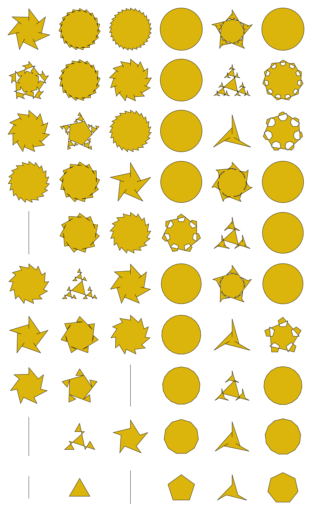
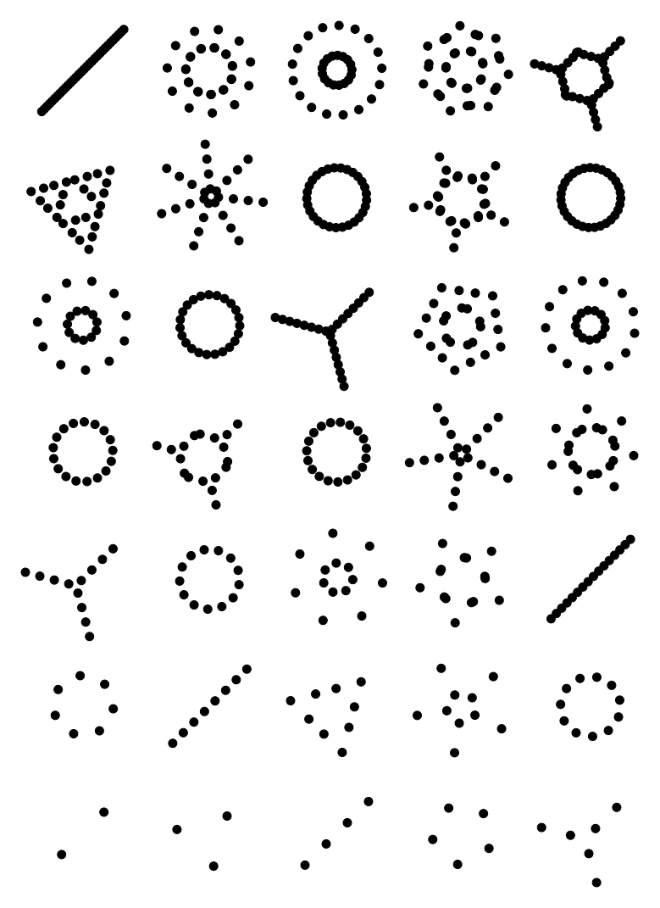
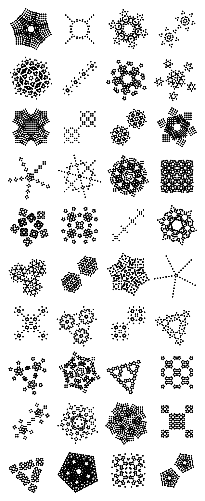
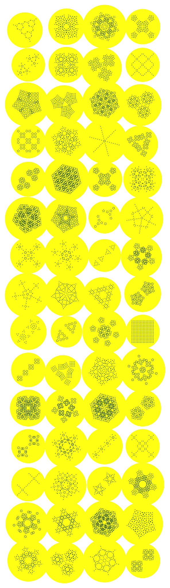

Supplement to Fahreddin Başeğmez’s 2026 Bridges Paper: Symmetries of Prime Factors
Main Scripts
These scripts require Python version 3.10 or higher and simetri.graphics version 0.0.8 Alpha or higher. If you need to run simetri.graphics version 0.0.6 Alpha, please see Basegmez_SoPF_Supplement_ver_0_0_6_alpha.html.
Prime Factorization Algorithm
Show the code
from typing import Listdef prime_factors(n: int) -> List[int]:'''Given an integer n > 1, returns a list of the prime factors of n.''' factors = [] p =2while p**2<= n:while n % p ==0: factors.append(p) n = n // p # integer divisionif p ==2: p +=1else: p +=2if n >1: factors.append(n)return factors
Pictograph Algorithm
Show the code
import simetri.graphics as sgColor = sg.Colorpi = sg.pisin = sg.sindef pictograph( factors: List[int], radius: float, bounds: bool=True, fill_color: Color = sg.burnt_orange,) -> sg.Batch:"""Creates a pictograph of the given sequence of integers.""" r = radius x = y =0 dots = sg.Batch(sg.Circle(radius=radius, fill_color=fill_color))for n in factors: theta =2* pi / n R = r / sin(theta /2) y = y - R dots.rotate(theta, (x, y), reps=n -1) outer_radius = R + rif bounds: inner_radius = R - r dots.append(sg.Circle(inner_radius, (x, y), fill=False)) dots.append(sg.Circle(outer_radius, (x, y), fill=False)) r = outer_radiusreturn dots, outer_radius
canvas = sg.Canvas()def cyclic_grid( canvas: Canvas, radius: float=5, width: float=160, height: float=160, columns: int=6, rows: int=10, margin: float=80, fill_color: Color = sg.burnt_orange,):for i inrange(2, columns * rows +2): row, col = (i -2) // columns, (i -2) % columns factors = prime_factors(i) circles, outer_radius = pictograph(factors, radius, bounds=False) center = circles.midpoint scale_factor = ((width /2) -10) / outer_radius circles.scale(scale_factor, about=center) dx = (col * width) - center[0] dy = (row * height) - center[1] circles.translate(dx, dy) shape = sg.Shape([c.center for c in circles], closed=True) shape.even_odd =True canvas.draw(shape, fill_color=sg.gold)cyclic_grid(canvas)canvas.display()

Using Other Shapes
Show the code
Shape = sg.Shapecanvas = sg.Canvas()def pictograph2(factors: List[int], shape:Shape, size:float) -> sg.Batch:'''Creates a pictograph of the given sequence of integers.''' x = y =0 shapes = sg.Batch(shape) r = sizefor n in factors: theta =2* pi / n R = r / sin(theta /2) y = y - R shapes.rotate(theta, (x, y), reps=n -1) outer_radius = R + r r = outer_radiusreturn shapessize =5pentagon = sg.reg_poly_shape(5, size).rotate(pi/10)factors = prime_factors(50)factors.append(4)pic = pictograph2(factors, shape=pentagon, size=size)canvas.circle(radius=pic.width/2+15, center=pic.midpoint, fill_color=sg.navy, stroke=False)canvas.draw(pic, fill_color=sg.yellow, stroke=False)canvas.display()
canvas = sg.Canvas()def pictograph3(factors: List[int], shape:Shape, size:float) -> sg.Batch:'''Creates a pictograph of the given sequence of integers.''' x = y =0 shapes = sg.Batch(shape) r = sizefor i, n inenumerate(factors): theta =2* pi / n R = r / sin(theta /2) y -= R shapes.rotate(theta, (x, y), reps=n -1) outer_radius = R + r r = outer_radiusreturn shapesfactors = prime_factors(50)size =10for i inrange(8): pentagon = sg.reg_poly_shape(5, size * (.5+ i*.25)).rotate(pi/10) pic = pictograph3(factors, shape=pentagon, size=size) canvas.draw(pic, line_width=2, fill=False) canvas.draw(pic.translate(pic.width*1.1, 0), fill_color=sg.navy,stroke=False) canvas.translate(0, -350)canvas.display()
canvas = sg.Canvas()pic1 = pictograph([6, 6], radius=10)[0].rotate(sg.pi/6)def puzzle(pic, dx): p1 = pic.copy().translate(dx, 0).rotate(2*pi/3, about=pic.midpoint, reps=2) p2 = [p for p in pic if p.fill ==False] p3 = [p for p in p1 if p.fill ==False] p4 = [p for p in pic if p.fill ==True] p5 = [p for p in p1 if p.fill ==True]return [[pic, p1], [p2, p3], [p4, p5]]def draw_puzzle(canvas, pic, dx, gap): pics = puzzle(pic, dx)for pic in pics: canvas.draw(pic[0]) canvas.draw(pic[1]) canvas.translate(gap, 0)gap =400canvas.draw(pic1)canvas.translate(0, -gap*.75)for i, dx inenumerate([60, 120, 51.96*2]):if i ==2: pic1.rotate(sg.pi/6, about=pic1.midpoint) draw_puzzle(canvas, pic1, dx, gap) canvas.translate(-3*gap, -gap)canvas.display()
This algorithm uses translations, rotations, and scaling to create pictographs similar to Algorithm 1. Changing the parameters yield different patterns.
Show the code
canvas = sg.Canvas()ROWS, COLS =7, 5WIDTH, HEIGHT =150, 150MARGIN =50DX = DY =50RADIUS =5canvas=sg.Canvas()for i inrange(2, ROWS * COLS +2): row, col = (i-2) // COLS, (i-2) % COLS x, y = (col * WIDTH) + MARGIN, (row * HEIGHT) + MARGIN dots=sg.Batch(sg.Circle(radius=RADIUS, center=(x + DX, y + DY)))for n in prime_factors(i): dots.rotate(sg.two_pi/n, (x,y), reps = n -1) dots.scale(.5, about = dots.center) dots.translate(DX, DY)for dot in dots: canvas.circle(RADIUS, dot.center)canvas.display()

Show the code
import randomcanvas = sg.Canvas()ROWS, COLS =10, 4WIDTH, HEIGHT =150, 150MARGIN =50DX = DY =50RADIUS =5canvas=sg.Canvas()ns = [2, 3, 4, 5, 6]set1 =set(sg.product(ns, ns, ns, ns))n_pics = ROWS * COLSpictographs = random.sample(list(set1), n_pics)for i inrange(2, ROWS * COLS +2): row, col = (i-2) // COLS, (i-2) % COLS x, y = (col * WIDTH) + MARGIN, (row * HEIGHT) + MARGIN dots=sg.Batch(sg.Circle(radius=RADIUS, center=(x + DX, y + DY)))for n in pictographs[i-2]: dots.rotate(sg.two_pi/n, (x,y), reps = n -1) dots.scale(.5, about = dots.center) dots.translate(DX, DY)for dot in dots: canvas.circle(2, dot.center)canvas.display()

Show the code
canvas = sg.Canvas()def rosette(factors, x=0, y=0, dx=60, dy=60, sf=.5): dots = sg.Batch(sg.Circle(radius=25)) dots.translate(x + dx, y + dy)for n in factors: dots.rotate(sg.two_pi / n, (x, y), reps=n -1) dots.scale(sf, about=dots.center) dots.translate(dx, dy)return dotsns = [2, 2, 3, 3, 4, 5, 6]set1 =set(sg.product(ns, ns, ns, ns))def grid(canvas,combinations, sf=.5, width=200, height=200, columns=4, margin=80):for i, combination inenumerate(combinations): row, col = i // columns, i % columns x, y = (col * width) + margin, (row * height) + margin pic = rosette(combination, x, y, sf=sf) center = pic.midpoint rad = sg.distance(pic.northwest, center) +10 canvas.circle(rad, center, fill_color=sg.yellow, stroke=False) canvas.draw(pic, fill_color=sg.dark_green, stroke=False)n_pics =60pictographs = random.sample(list(set1), n_pics)grid(canvas, pictographs)canvas.display()

Show the code
canvas = sg.Canvas()def rosette(factors, x=0, y=0, dx=60, dy=60, sf=.5): dots = sg.Batch(sg.Circle(radius=25)) dots.translate(x + dx, y + dy)for n in factors: dots.rotate(sg.two_pi / n, (x, y), reps=n -1) dots.scale(sf, about=dots.center) dots.translate(dx, dy)return dotsns = [2, 4, 5, 6]set1 =set(sg.product(ns, ns, ns, ns))def grid(canvas,combinations, sf=.5, width=200, height=200, columns=4, margin=80, dx=60, dy=60):for i, combination inenumerate(combinations): row, col = i // columns, i % columns x, y = (col * width) + margin, (row * height) + margin pic = rosette(combination, x, y, dx, dy, sf=sf) shp = sg.Shape([c.center for c in pic], closed=True) shp.even_odd=True canvas.draw(shp, fill_color=sg.gold, line_width=2) canvas.text(str(combination), (x-50, y))n_pics =40pictographs = random.sample(list(set1), n_pics)grid(canvas, pictographs)canvas.display()